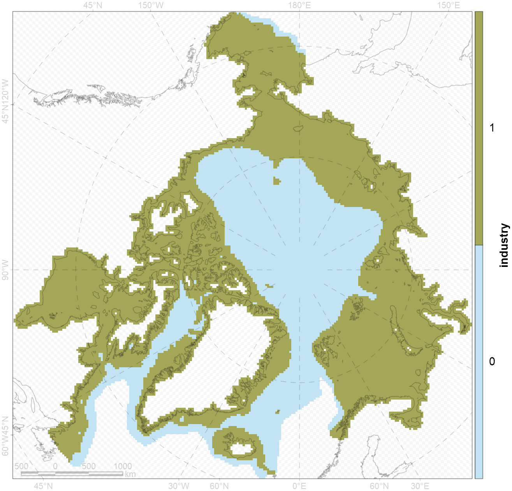
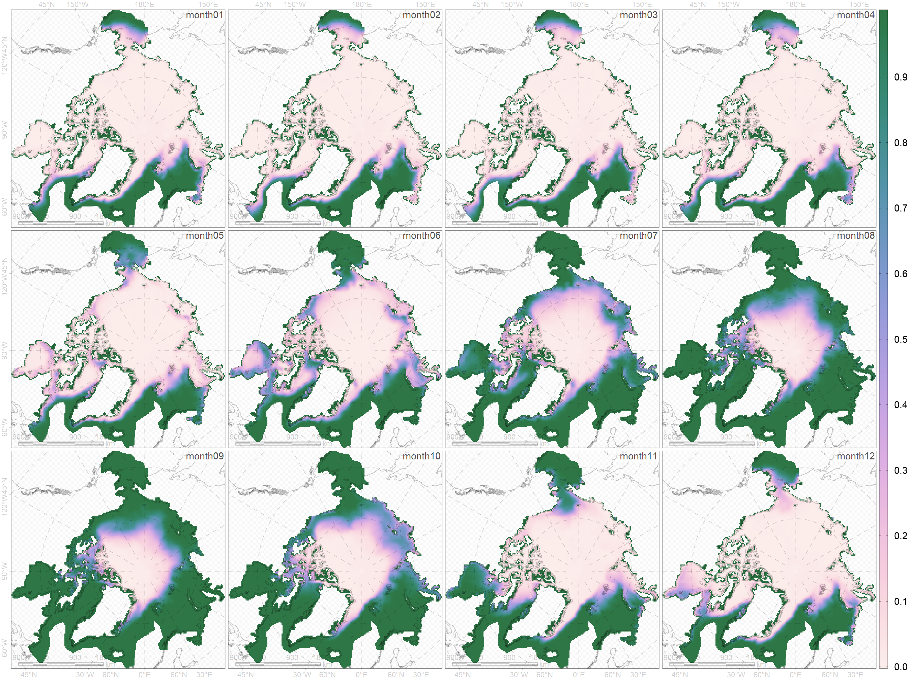
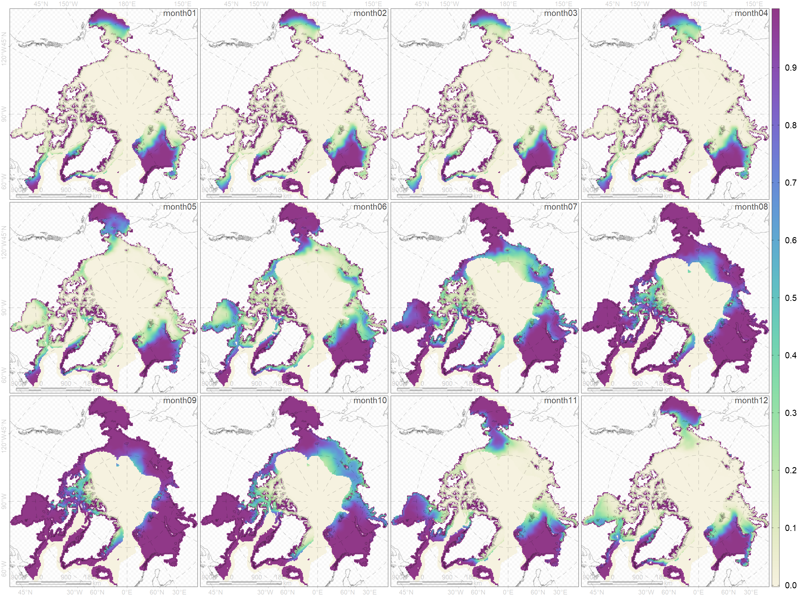
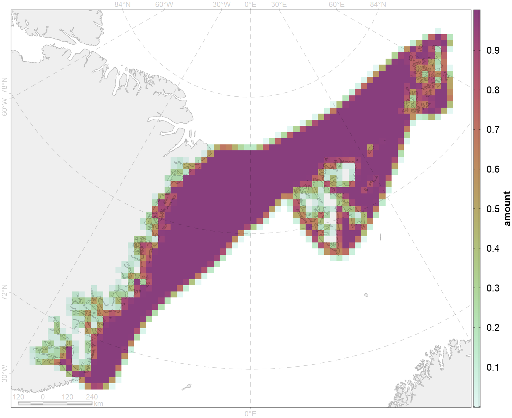
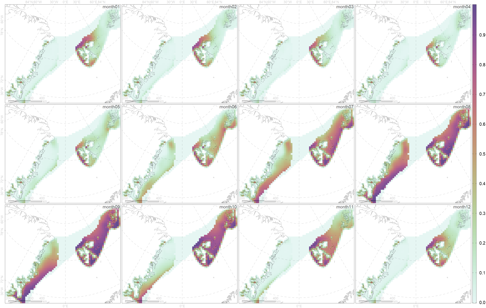

Рассмотрим CF 5045 и отрасль “FBT”. Если разложить таблицу “compatibility assessment_all_2022-11-18.xlsx” в “длинный формат”, то получаается такая таблица для выбраныых industry и CF.
| CF_code | industry | value | month |
|---|---|---|---|
| 5045 | FBT | 2 | 1 |
| 5045 | FBT | 2 | 2 |
| 5045 | FBT | 2 | 3 |
| 5045 | FBT | 2 | 4 |
| 5045 | FBT | 2 | 5 |
| 5045 | FBT | 2 | 6 |
| 5045 | FBT | 2 | 7 |
| 5045 | FBT | 2 | 8 |
| 5045 | FBT | 2 | 9 |
| 5045 | FBT | 2 | 10 |
| 5045 | FBT | 2 | 11 |
| 5045 | FBT | 2 | 12 |
Применяем отрасли “FBT” фильтры по глубине и береговой линии из “industry_conditions.csv”. Получаем маску, где эта деятельность возможна.
| activity | industry | abbr | minCoast | maxCoast | minDepth | maxDepth | iceFree |
|---|---|---|---|---|---|---|---|
| Fishery | bottom trawling | FBT | -999 | 999 | 0 | 500 | YES |

Инвертируем концентрацию льда, так как деятельность в отсутствие ледового покрова.

Наложим маску industry “FBT” на предпочтительность отсутствия льда. Похоже на предыдущую картинку, но в море Баффина действие маски заметно.

По CF есть нормированный Amount:

Наложим Amount на пересечения инвертированной концентрации и маску условий отрасли.

Создадим столбец available. Он от 0 до 1.
Если 1, то у отрасли нет ограничения влияния на CF.
Если 0, то отрасль ограничена влиянием на CF.
В столбец available запишем суммарное наложение Amount, отсутствия льда и ограничение отрасли по глубине и береговой линии, деленное на Amount.
| CF_code | industry | value | month | available |
|---|---|---|---|---|
| 5045 | FBT | 2 | 1 | 0.130 |
| 5045 | FBT | 2 | 2 | 0.118 |
| 5045 | FBT | 2 | 3 | 0.096 |
| 5045 | FBT | 2 | 4 | 0.086 |
| 5045 | FBT | 2 | 5 | 0.130 |
| 5045 | FBT | 2 | 6 | 0.226 |
| 5045 | FBT | 2 | 7 | 0.382 |
| 5045 | FBT | 2 | 8 | 0.524 |
| 5045 | FBT | 2 | 9 | 0.530 |
| 5045 | FBT | 2 | 10 | 0.391 |
| 5045 | FBT | 2 | 11 | 0.234 |
| 5045 | FBT | 2 | 12 | 0.152 |
Теперь смотрим на оценки экспертов и ломаем голову, как их изменить.
Стоят значения: 2.
Если все значения available близки к 1, то мы их не меняем.
Если все значения available около 0, то value можем менять на 0.
Если значения available меняются от
0.09 до 0.53,
то садимся и чешем репу.